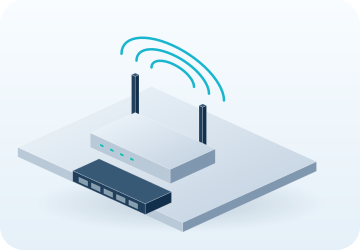
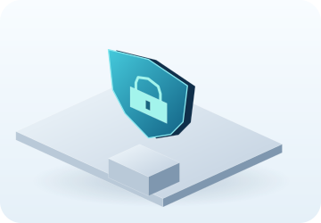

1. Descreva o problema
Indique a localidade, a marca e o modelo do equipamento, os sintomas e quando começaram. Se existirem ficheiros importantes, informe-nos antes da intervenção.

Avaliamos falhas, lentidão e problemas de funcionamento; reparamos e mantemos portáteis e desktops, instalamos SSD e memória compatível e configuramos sistemas, programas, impressoras e redes. Apoiamos ainda a proteção e organização dos ficheiros, a migração de dados e a avaliação de recuperação, sem garantir resultados que dependem do estado dos suportes. Para negócios locais, disponibilizamos sites, alojamento, certificado SSL e manutenção, com âmbito definido na proposta.
Zonas de atuação: Cascais, Estoril, Parede, Carcavelos, Alcabideche, Manique, Tires, São Domingos de Rana, Sintra, Oeiras, Carnaxide, Algés e Lisboa. As deslocações são agendadas e confirmadas previamente. Fora destas zonas, avaliamos apoio remoto quando adequado.
Pedir avaliação do meu caso
Serviços de informática
Conhece as intervenções que podemos avaliar para o teu portátil, desktop ou rede. O atendimento ao domicílio, de Cascais a Lisboa, e o apoio remoto são combinados previamente.

Avaliamos falhas de arranque, bloqueios, lentidão, problemas de carregamento e funcionamento irregular. A intervenção é definida de acordo com o modelo e o estado do equipamento.
Peças e disponibilidade dependem do modelo e do diagnóstico. Intervenções avançadas são avaliadas caso a caso.
Pedir orçamento
Prestamos assistência a computadores de secretária e ajudamos a definir uma configuração adaptada ao trabalho, estudo ou utilização doméstica.
A escolha de componentes depende da compatibilidade, do estado do equipamento e da aprovação do orçamento.
Pedir orçamento
Ajudamos a organizar a rede e a melhorar a cobertura sem fios em casas e pequenos escritórios. Avaliamos o espaço, os equipamentos e os sintomas antes de propor alterações.
A cobertura e a velocidade dependem também do espaço, dos dispositivos e do serviço do operador.
Pedir orçamento
Configuramos o sistema e as aplicações para uma utilização organizada. Antes de reinstalações ou formatações, combinamos o tratamento dos ficheiros existentes.
Licenças, subscrições e cópias de segurança são definidas no orçamento. Não incluas palavras-passe no formulário.
Pedir orçamento
Apoiamos a identificação de programas indesejados e a criação de rotinas de proteção dos ficheiros, adaptadas à utilização do equipamento.
Nenhuma solução garante proteção absoluta ou recuperação de todos os ficheiros. As cópias de segurança devem ser verificadas periodicamente.
Pedir orçamento
Ajudamos a transferir ficheiros e a resolver problemas que possam ser tratados à distância. Nos casos de perda de dados, avaliamos primeiro a situação.
A recuperação de dados não é garantida. O acesso remoto é feito com consentimento e não substitui intervenções físicas necessárias.
Pedir orçamento
Sites rápidos para negócios locais, com alojamento, certificado SSL e manutenção incluídos numa avença mensal. Tratamento técnico para que o seu site flua e funcione.
Conteúdos, alterações, domínio e condições da avença são definidos no orçamento. Não é apresentado um preço mensal nesta página.
Pedir proposta →Conhecer o serviço de criação de sitesIndica a marca e o modelo do equipamento, descreve o problema e diz-nos a tua localidade. Combinamos a avaliação, os custos de diagnóstico e deslocação, quando aplicáveis, e as condições da intervenção antes de avançar. Componentes, licenças e serviços adicionais dependem do orçamento aprovado.
Indique a localidade, a marca e o modelo do equipamento, os sintomas e quando começaram. Se existirem ficheiros importantes, informe-nos antes da intervenção.
Analisamos se o pedido pode ser acompanhado ao domicílio ou remotamente e esclarecemos o agendamento e as condições aplicáveis antes de avançar.
Explicamos as opções e o âmbito da intervenção. Reparações, peças, upgrades e serviços adicionais dependem da avaliação e da sua aprovação.